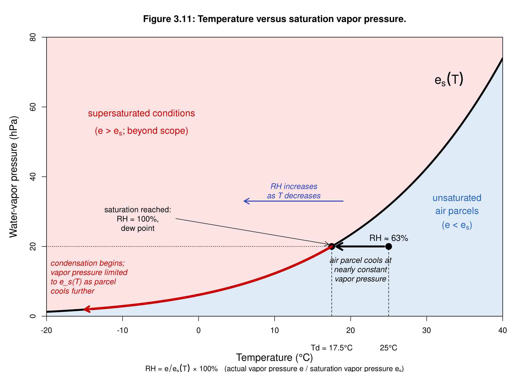
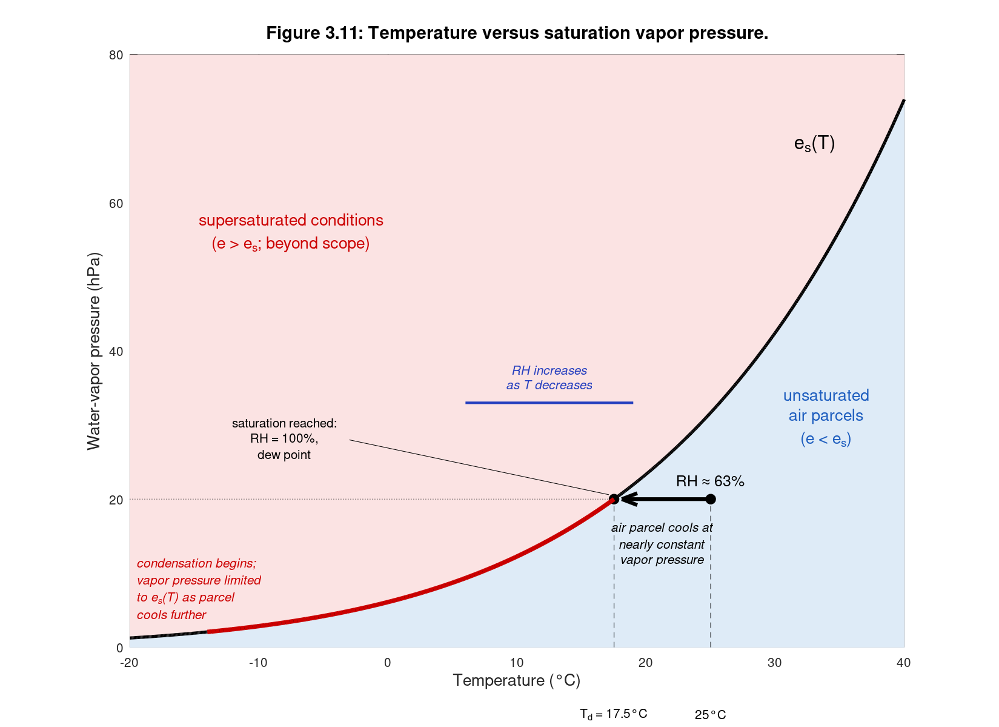

Chapter 3 · Precipitation
Figure 3.11: Temperature versus saturation vapor pressure
Saturation vapor pressure curve with dew-point and relative-humidity annotations.
Source: Chapter 3 draft; author code (Figure 3.11 code file, truncated at Word's 2048-character limit) completed from the figure image
Author code was cut off at 2048 characters in the Word file; the remainder was reconstructed to match the draft image. Saturation vapor pressure uses the Bolton (1980) formula.
No external data file: values are small and embedded in the code.

Code: vapor_pressure.py · image: figure_python.png
"""Chapter 3, Figure 3.11 - Temperature versus saturation vapor pressure (dew point and RH).
Starts from the code in 'Code for Figure 3.11.docx' (J. Gannon); the pasted code stopped part-way through the
annotations, so the remaining labels were completed to match the figure in the chapter draft."""
import numpy as np
import matplotlib.pyplot as plt
def es(T):
"""Saturation vapor pressure over liquid water (hPa), Bolton (1980); T in deg C."""
return 6.112 * np.exp(17.67 * T / (T + 243.5))
def dewpoint(e):
x = np.log(e / 6.112)
return 243.5 * x / (17.67 - x)
T0, e0 = 25.0, 20.0
Td = dewpoint(e0)
RH = 100 * e0 / es(T0)
T = np.linspace(-20, 40, 600)
fig, ax = plt.subplots(figsize=(11, 8))
ax.fill_between(T, es(T), 80, color="#fbe3e3")
ax.fill_between(T, 0, es(T), color="#deebf7")
ax.plot(T, es(T), "k", lw=2.5)
ax.set_xlim(-20, 40); ax.set_ylim(0, 80)
ax.set_xlabel("Temperature (°C)", fontsize=14, labelpad=30)
ax.set_ylabel("Water-vapor pressure (hPa)", fontsize=14)
ax.set_title("Figure 3.11: Temperature versus saturation vapor pressure.", fontsize=15, fontweight="bold", pad=14)
ax.text(31.5, 68, r"$e_{s}(T)$", fontsize=15)
# Parcel and cooling path at constant vapor pressure
ax.plot([T0], [e0], "ko", ms=9, zorder=5)
ax.annotate("", xy=(Td, e0), xytext=(T0 - 0.6, e0),
arrowprops=dict(arrowstyle="-|>", lw=3, color="k", mutation_scale=18))
ax.plot([Td], [e0], "ko", ms=9, zorder=5)
ax.plot([-20, Td], [e0, e0], "k", ls=(0, (2, 3)), lw=1)
ax.plot([Td, Td], [0, e0], "k--", lw=1)
ax.plot([T0, T0], [0, e0], "k--", lw=1)
ax.text(T0, e0 + 2.5, f"RH ≈ {RH:.0f}%", ha="center", fontsize=12)
ax.text((T0 + Td) / 2, e0 - 3, "air parcel cools at\nnearly constant\nvapor pressure",
ha="center", va="top", style="italic", fontsize=11, zorder=6, bbox=dict(fc="#deebf7", ec="none", pad=2))
# Dew point annotation
ax.annotate("saturation reached:\nRH = 100%,\ndew point", xy=(Td - 0.4, e0 + 0.6), xytext=(-8, 27),
fontsize=11, ha="center", arrowprops=dict(arrowstyle="-|>", color="k"))
# Below dew point: vapor pressure follows es(T) (condensation)
Tc = np.linspace(Td, -14, 100)
ax.plot(Tc, es(Tc), color="#cc0000", lw=3.5, zorder=4)
ax.annotate("", xy=(-15, es(-15)), xytext=(-13, es(-13)),
arrowprops=dict(arrowstyle="-|>", color="#cc0000", lw=3, mutation_scale=18))
ax.text(-19, 6.5, "condensation begins;\nvapor pressure limited\nto $e_s(T)$ as parcel\ncools further",
color="#cc0000", style="italic", fontsize=11, va="bottom")
# ---- completed from here (the original code was cut off) ----
ax.text(-7.5, 56, "supersaturated conditions\n($e > e_s$; beyond scope)", color="#cc0000", fontsize=14, ha="center")
ax.text(34, 31, "unsaturated\nair parcels\n($e < e_s$)", color="#1f5fbf", fontsize=14, ha="center")
ax.annotate("", xy=(6, 33), xytext=(19, 33), arrowprops=dict(arrowstyle="-|>", color="#2740c0", lw=2))
ax.text(12.5, 35, "RH increases\nas T decreases", color="#2740c0", style="italic", fontsize=13, ha="center")
ax.text(Td, -5.5, f"$T_d$ = {Td:.1f}°C", ha="center", va="top", fontsize=11)
ax.text(T0, -5.5, "25°C", ha="center", va="top", fontsize=11)
fig.text(0.5, 0.025, r"$RH = \dfrac{e}{e_s(T)} \times 100\%$ (actual vapor pressure $e$ / saturation vapor pressure $e_s$)",
ha="center", fontsize=13, bbox=dict(boxstyle="round", fc="white"))
fig.subplots_adjust(bottom=0.2)
fig.savefig("figure_python.png", dpi=150)

Code: vapor_pressure.R · image: figure_r.png

# Chapter 3, Figure 3.11 - Temperature versus saturation vapor pressure (dew point and RH)
es <- function(T) 6.112 * exp(17.67 * T / (T + 243.5)) # hPa, Bolton (1980), T in deg C
dewpoint <- function(e) { x <- log(e / 6.112); 243.5 * x / (17.67 - x) }
T0 <- 25; e0 <- 20
Td <- dewpoint(e0); RH <- 100 * e0 / es(T0)
T <- seq(-20, 40, length.out = 600)
png("figure_r.png", width = 1650, height = 1200, res = 150)
par(mar = c(6, 5, 4, 1))
plot(NA, xlim = c(-20, 40), ylim = c(0, 80), xlab = "", ylab = "Water-vapor pressure (hPa)",
main = "Figure 3.11: Temperature versus saturation vapor pressure.", cex.lab = 1.3, xaxs = "i", yaxs = "i")
polygon(c(T, rev(T)), c(es(T), rep(80, length(T))), col = "#fbe3e3", border = NA)
polygon(c(T, rev(T)), c(es(T), rep(0, length(T))), col = "#deebf7", border = NA)
lines(T, es(T), lwd = 4)
box()
mtext("Temperature (°C)", side = 1, line = 4, cex = 1.3)
text(33, 68, expression(e[s](T)), cex = 1.6)
# parcel cooling at constant vapor pressure
arrows(T0 - 0.6, e0, Td + 0.6, e0, lwd = 4, length = 0.15)
points(c(T0, Td), c(e0, e0), pch = 19, cex = 1.8)
lines(c(-20, Td), c(e0, e0), lty = 3)
segments(c(Td, T0), 0, c(Td, T0), e0, lty = 2)
text(T0, e0 + 2.5, sprintf("RH ≈ %.0f%%", RH), cex = 1.1)
text((T0 + Td) / 2, e0 - 3, "air parcel cools at\nnearly constant\nvapor pressure", font = 3, adj = c(0.5, 1))
arrows(-3, 28, Td - 0.4, e0 + 0.6, length = 0.1)
text(-8, 28, "saturation reached:\nRH = 100%,\ndew point")
Tc <- seq(Td, -14, length.out = 100)
lines(Tc, es(Tc), col = "#cc0000", lwd = 5)
arrows(-13, es(-13), -15, es(-15), col = "#cc0000", lwd = 4, length = 0.12)
text(-19.5, 6.5, "condensation begins;\nvapor pressure limited\nto e_s(T) as parcel\ncools further", col = "#cc0000", font = 3, adj = c(0, 0))
text(-7.5, 58, "supersaturated conditions", col = "#cc0000", cex = 1.2)
text(-7.5, 53, expression(paste("(", e > e[s], "; beyond scope)")), col = "#cc0000", cex = 1.2)
text(34, 34, "unsaturated", col = "#1f5fbf", cex = 1.2)
text(34, 30, "air parcels", col = "#1f5fbf", cex = 1.2)
text(34, 26, expression(paste("(", e < e[s], ")")), col = "#1f5fbf", cex = 1.2)
arrows(19, 33, 6, 33, col = "#2740c0", lwd = 2, length = 0.12)
text(12.5, 36, "RH increases\nas T decreases", col = "#2740c0", font = 3)
text(Td, -9, sprintf("Td = %.1f°C", Td), xpd = NA); text(T0, -9, "25°C", xpd = NA)
mtext(expression(paste("RH = ", e / e[s](T), " × 100% (actual vapor pressure e / saturation vapor pressure ", e[s], ")")),
side = 1, line = 5.3, cex = 0.95)
dev.off()

Code: vapor_pressure.m · image: figure_matlab.png

% Chapter 3, Figure 3.11 - Temperature versus saturation vapor pressure (dew point and RH)
es = @(T) 6.112 * exp(17.67 * T ./ (T + 243.5)); % hPa, Bolton (1980), T in deg C
dewpoint = @(e) 243.5 * log(e/6.112) ./ (17.67 - log(e/6.112));
T0 = 25; e0 = 20;
Td = dewpoint(e0); RH = 100 * e0 / es(T0);
T = linspace(-20, 40, 600);
fig = figure('Position',[100 100 1100 800]); hold on
patch([T fliplr(T)], [es(T) 80*ones(size(T))], [0.984 0.89 0.89], 'EdgeColor','none');
patch([T fliplr(T)], [es(T) zeros(size(T))], [0.871 0.922 0.969], 'EdgeColor','none');
plot(T, es(T), 'k', 'LineWidth', 2.5);
axis([-20 40 0 80]); box on
xlabel('Temperature (°C)', 'FontSize', 13); ylabel('Water-vapor pressure (hPa)', 'FontSize', 13);
title('Figure 3.11: Temperature versus saturation vapor pressure.', 'FontSize', 14);
text(31.5, 68, 'e_s(T)', 'FontSize', 15);
% parcel cooling at constant vapor pressure
plot([T0 Td+0.6], [e0 e0], 'k-', 'LineWidth', 3);
plot(Td+0.6+[1.2 0 1.2], e0+[0.8 0 -0.8], 'k-', 'LineWidth', 3); % arrow head
plot([T0 Td], [e0 e0], 'ko', 'MarkerFaceColor','k', 'MarkerSize', 8);
plot([-20 Td], [e0 e0], 'k:');
plot([Td Td], [0 e0], 'k--'); plot([T0 T0], [0 e0], 'k--');
text(T0, e0+2.5, sprintf('RH ≈ %.0f%%', RH), 'HorizontalAlignment','center', 'FontSize', 12);
text((T0+Td)/2, e0-6, {'air parcel cools at','nearly constant','vapor pressure'}, 'HorizontalAlignment','center', 'FontAngle','italic');
annotation_x = [Td-0.4 -3]; plot(annotation_x, [e0+0.6 28], 'k-');
text(-8, 28, {'saturation reached:','RH = 100%,','dew point'}, 'HorizontalAlignment','center');
Tc = linspace(Td, -14, 100);
plot(Tc, es(Tc), 'Color', [0.8 0 0], 'LineWidth', 3.5);
text(-19.5, 8, {'condensation begins;','vapor pressure limited','to e_s(T) as parcel','cools further'}, 'Color',[0.8 0 0], 'FontAngle','italic');
text(-7.5, 56, {'supersaturated conditions','(e > e_s; beyond scope)'}, 'Color',[0.8 0 0], 'FontSize', 13, 'HorizontalAlignment','center');
text(34, 31, {'unsaturated','air parcels','(e < e_s)'}, 'Color',[0.12 0.37 0.75], 'FontSize', 13, 'HorizontalAlignment','center');
plot([19 6], [33 33], '-', 'Color',[0.15 0.25 0.75], 'LineWidth', 2);
text(12.5, 36.5, {'RH increases','as T decreases'}, 'Color',[0.15 0.25 0.75], 'FontAngle','italic', 'HorizontalAlignment','center');
text(Td, -9, sprintf('T_d = %.1f°C', Td), 'HorizontalAlignment','center'); text(T0, -9, '25°C', 'HorizontalAlignment','center');
text(10, -13, 'RH = e / e_s(T) × 100% (actual vapor pressure e / saturation vapor pressure e_s)', 'HorizontalAlignment','center');
print(fig, '-dpng', '-r150', 'figure_matlab.png');